Mods agresivos enfrentados
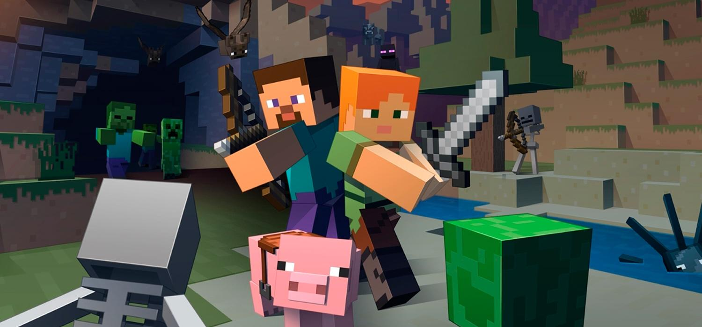
Inicio
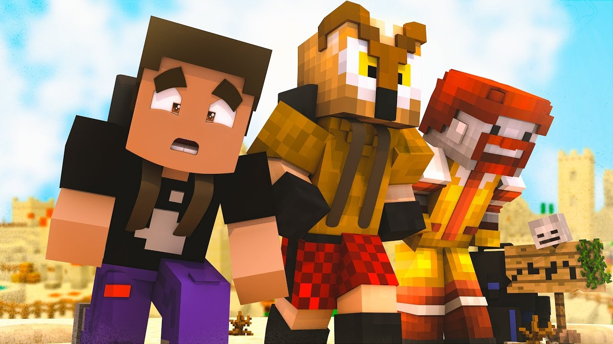
Integrantes
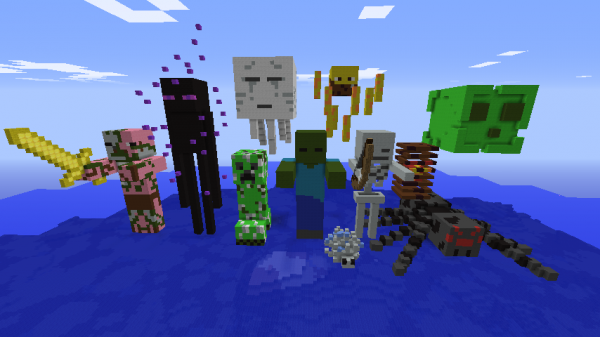
Mods agresivos
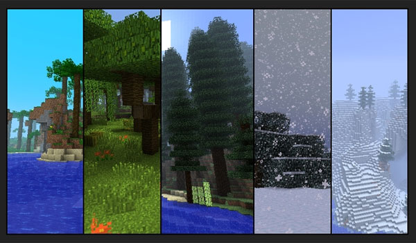
Biomas
Directo
Jinete avícola
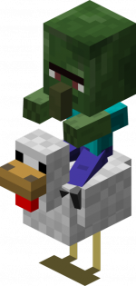
El jinete avícola (Chicken Jockey en inglés) es una variación poco común del zombi bebé, el aldeano zombi bebé o el hombrecerdo zombi bebé sobre una gallina. Se pueden asesinar fácilmente con un arma, pero no puede morir por caída, ya que caerá lentamente porque la gallina batirá sus alas.
Los Zombies que estan montados pueden generarse con objetos equipados. Los Mini Zombie Pigman montados en un Pollo siempre tendrán su espada de oro equipada. Golpear a un Zombie pigman montado en un Pollo causará que ataque, como un Zombie Pigman normal.
Jinete arácnido
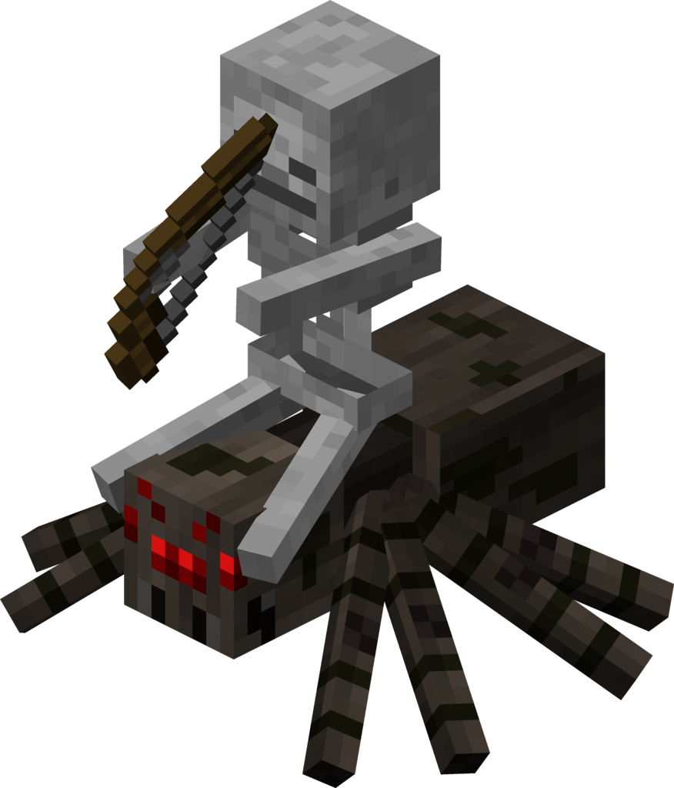
El jinete arácnido fue introducido en la "Seecret Friday Update 8". Cuando una araña aparece, tiene una probabilidad de 1% de que aparezca un esqueleto montado en su espalda. Son consideradas dos criaturas en vez de uno, ya que cada uno tiene su vida. El jinete arácnido puede lanzar flechas y moverse con la agilidad de una araña, creando una combinación mortal. Cuando se hace de día, el esqueleto arde mientras la araña sobrevive. Si la araña muere, el esqueleto continuara atacando y moviéndose. Esta criatura puede matarse a sí misma. Algunas veces las flechas pueden aterrizar en la araña, y otras veces, la araña podría saltar y hacer que el esqueleto se golpeara con su propia flecha. Es una criatura con bastantes problemas.
Creeper
Los creeper seguirán a todos los jugadores que se encuentren en un radio de 16 bloques (±5%) y ±4 bloques verticalmente. Además pueden subir escaleras o enredaderas, como cualquier otra criatura.Cuando se encuentre a un bloque del jugador se inflará y explotará en cuestión de un segundo y medio (1,5 segundos). Sin embargo, esta explosión tardará más si se encuentra entre telarañas.Los creepers huyen de los ocelotes y gatos desde los 25 o 30 bloques. La explosión de un creeper tiene una potencia de 3.
Los creepers electrificados se generan cuando un rayo cae a unos 3 o 4 bloques de distancia de un creeper, aumentando su poder explosivo. Se distinguen de los normales por un aura azul que los rodea.
Puede soltar de 0 a 2 de pólvora o un disco de música si muere por un flechazo de un esqueleto. También puede dejar una cabeza de creeper si muere por la explosión de un creeper electrificado. Da 5 puntos de experiencia si muere por un lobo domesticado.
Ghast
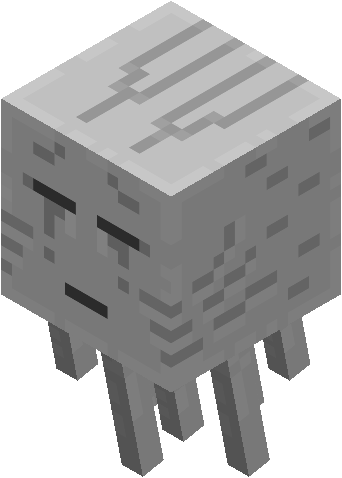
Los ghasts son unas criaturas gigantes y voladoras del Inframundo que lanzan bolas de fuego explosivo. Se caracterizan por un ruido de llanto cuando están cerca.Los ghasts suelen estar volando por el Inframundo con su boca y ojos cerrados. De vez en cuando abren la boca y emiten un sonido similar al de un gato pero invertido. Al atacar abren los ojos y la boca, lanzando una bola de fuego. El sonido de los ghasts se oye siempre a la misma distancia sin importar a la que realmente se encuentren, por lo que pueden engañar los sentidos del jugador. Tiene un tamaño de 4×4×4 bloques y unas patas del tamaño de un jugador. Los ghasts tienen un gran rango de ataque, potencia explosiva y movilidad. A diferencia de la mayoría de criaturas agresivas, los ghasts no tienen un "modo persecución" en el que intenten acercarse al jugador. Comparados con otras criaturas, los ghast tienen un gran rango de alcance de objetivos, alrededor de unos 100 bloques. Cuando el jugador se encuentra a unos 16 bloques empezará a acercarse, intentar ganar altura y abrir fuego.
Araña
La araña es la tercera criatura añadida al juego. Sus ojos brillan de color rojo en la oscuridad, dándoles una apariencia tétrica. Su tamaño, a diferencia de otras criaturas hostiles (cajas de 1x2x1 bloques), es de 2x1x2 bloques. No puede pasar a través de entradas angostas como los zombis u otros monstruos, pero puede atravesar huecos con sus habilidades para saltar y trepar. Las arañas hacen chirridos continuos, fáciles de detectar. Los creepers hacen un sonido parecido al de las arañas cuando se lastiman, pero muy corto. Tienen una posibilidad de aparecer con un esqueleto montado al lomo. Estos jinetes arácnidos también pueden subir paredes. Las arañas solo son agresivas por la noche. Pero si el jugador ataca a una araña siendo de noche, y se hace de día, ésta continuará persiguiéndolo. Las arañas, dada su peculiaridad en la vida real, también pueden escalar bloques sólidos en vertical.
Esqueleto
El esqueleto wither es una de sus variantes, que aparece en el Inframundo, exactamente en las fortalezas del mismo. El esqueleto glacial es otra de sus variantes y aparecerá solo en biomas nevados o fríos. El esqueleto con calabaza es un esqueleto especial que solo aparece en halloween, este esqueleto tiene una calabaza en su cabeza. El esqueleto sin arco es un esqueleto que aparece rara vez y no porta un arco; sin embargo, correrá a atacar a cualquier jugador que esté en su rango.
Los esqueletos normales pueden aparecer en cualquier parte de la superficie si el nivel de luz es de 7 o menor.En el infierno, también pueden generarse en fortalezas inferiores a un nivel de luz de 7 o menos en lugar de un esqueleto wither. Hay un 1% de que aparezca un esqueleto montado en una araña, se llama Jinete arácnido. Los jinetes esqueleto aparecen cuando un jugador activa una trampa de esqueleto. Los esqueletos montan en caballos esqueletos y están equipados con arcos encantados y cascos de hierro, y tienen inmunidad al daño durante 3 segundos después de su aparición.
Bruja
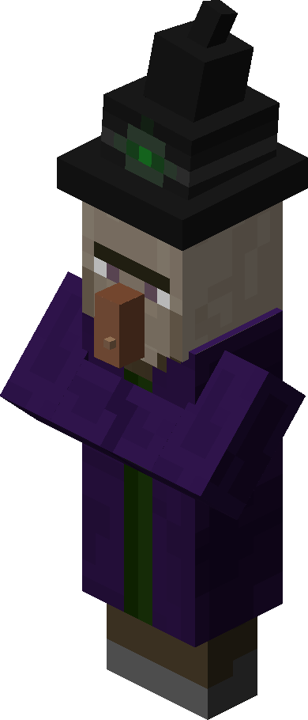
La bruja es una criatura agresiva. Aparecen en cualquier lugar con un nivel de iluminación inferior a 7. Llevan un sombrero negro con un cristal en el centro, una verruga en la nariz, un traje violeta y tienen la piel blanca. Extrañamente, Jeb utilizó como base la forma del aldeano para hacer a la bruja. Lanzan pociones venenosas cuando ven al jugador o algún animal pasivo y son completamente agresivas. Cada cabaña de brujas genera una bruja en su interior durante la generación del mundo, y nunca desaparecerá. Después, solo aparecerán brujas en el área de 7 × 9 × 7 alrededor de la cabaña de brujas. El área de aparición en la cabaña de brujas es: un bloque de area sobre el porche, desde un nivel debajo del piso de la cabaña hasta dos bloques sobre el techo.
Esqueleto wither
Los esqueletos wither son unas criaturas hostiles de lo más peligrosas que aparecen en las fortalezas del Inframundo. Los esqueletos wither pueden soltar 1 de carbón y 1 o 2 huesos. Hay un 2,5% de probabilidad de que suelten su calavera al ser asesinados por un jugador o un lobo domesticado, un 3,5% con Saqueo I, 4,5% con Saqueo II y 5,5% con Saqueo III. Si este muere a manos de un creeper electrificado soltará su calavera con un 100% de probabilidad. En ocasiones también puede soltar su espada de piedra, pero te la darán usada. Dan 5 puntos de experiencia.
Zombie
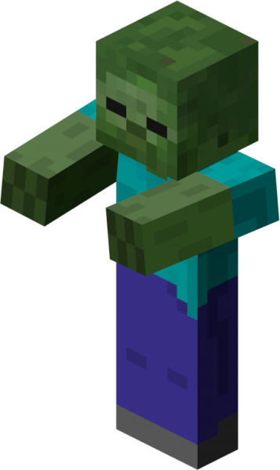
Los zombis son una de las criaturas hostiles más comunes en Minecraft. Los zombies se generan en grupos de 4 y persiguen al jugador desde los 40 bloques de distancia, a diferencia de los 16 que suelen tener las demás criaturas hostiles. Los zombies esquivan obstáculos, precipicios y la lava y siempre intentarán recorrer el camino más corto hasta el jugador. A diferencia de los esqueletos, los zombies no evitan ser golpeados, van continuamente detrás del jugador sin importar que sufrán daño. Son capaces de destruir puertas.Desde la actualización asiática de la 1.12.0 los zombies se hunden y se transforma en un ahogado. Al amanecer, cuando el sol está a unos 15 grados de la superficie (cuando ya no se ve la luna), los zombies empezarán a arder si están expuestos a la luz del sol, aunque si tienen casco no arderán, pero el casco si sufrirá daños.
Ahogado
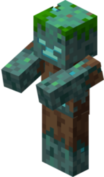
Los ahogados son un no muerto común que aparece en los océanos, ríos, pantanos o cuando un zombi se ahoga. Se tendrá que quedar 15 segundos bajo agua un zombie normal. Puede venir equipado con un tridente. Los Ahogados aparecerán naturalmente cuando haya nivel de luz menor a 7 en todos los variantes del océano,ríos y biomas de pantano. Ellos aparecen en lo más profundo de dichas masas de agua y caminan por las profundidades al contrario que otras criaturas. Los Ahogados tienen la probabilidad de aparecer con un tridente o una caña de pescar y ocasionalmente con un caparazón de nautilo.También tienen una baja probabilidad de que monten una gallina,incluso después que se ahogue un zombi, creando un jinete de pollo ahogado.Ellos no pueden generarse con armadura, ni armas exceptuando el tridente al contrario que su contraparte el zombi.
Phantom
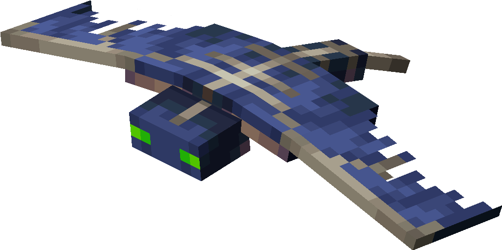
Los Fantasmas (Anteriormente conocido o llamada como Mob B y El monstruo de los cielos nocturnos) son una entidad hostil voladora común que atacará al jugador que no haya dormido en un periodo de 3 días o superior en el juego. Cuando están inactivos, los fantasmas volarán en círculo en una constante elevación y dejando un rastro de de partículas de humo gris. Tienen un radio de búsqueda bastante grande y a veces pueden descender o subir rápidamente para atacar a su víctima. Si se detiene o hiere durante esta acción, el fantasma retrocederá a su elevación original. Los fantasmas pueden moverse a través del agua a la misma velocidad que lo hacen normalmente. Cuando está inactivo sobre el agua, el fantasma a veces se caerá en el agua y se hundirá, ya que no puede nadar en el agua hacia arriba. Cuando se encuentre bajo el efecto de Invisibilidad, el cuerpo del fantasma desaparecerá, pero sus ojos y partículas de humo seguirán siendo visibles.